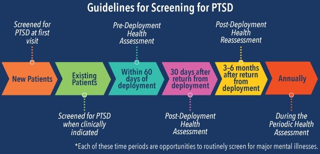

What is PTSD? Symptoms, Warning signs, Treatment

Facts n’ Figures
For more information on
facts and figures
Facts about PTS
What:
PTS is a mental health condition that occurs after the exposure or experience of a traumatic event or series of traumatic events such as war, accidents, violence, death, abuse, etc.
Who:
- About 7 or 8 out of every 100 people (or 7-8% of the population) will have PTSD at some point in their lives.
- About 8 million adults have PTSD during a given year. This is only a small portion of those who have gone through a trauma.
- About 10 of every 100 women (or 10%) develop PTSD sometime in their lives compared with about 4 of every 100 men (or 4%). Learn more about women, trauma and PTSD. Source: https://www.ptsd.va.gov/understand/common/common_adults.asp
Symptoms:
Treatment:
- Therapy
- CPT (cognitive processing therapy)
- Exposure Therapy
- Medication (SSRI, SNRI)
- SIT ( Stress Inoculation training)

Personal Experience
For more information on
personal experience
Personal Experience with PTS
Popular and News Media
For more information on
news and media
News and Media on PTS
Scholary Communication Literature
For more information on
scholary literature
literatures on PTS